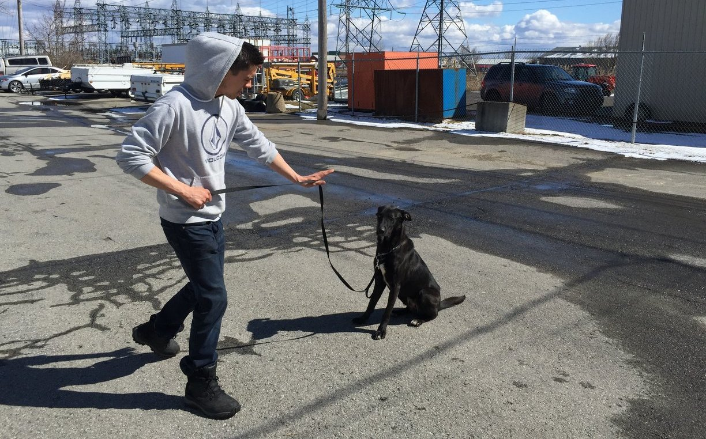
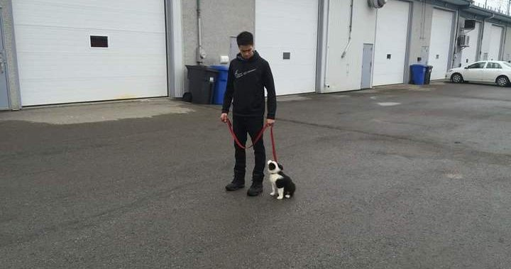
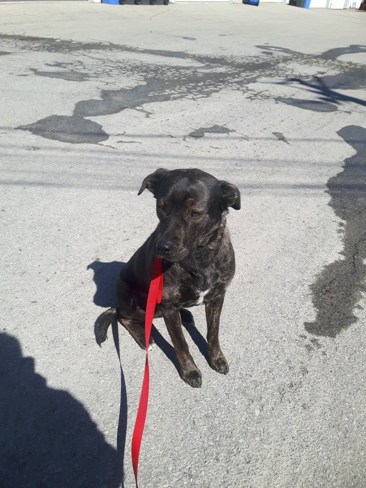
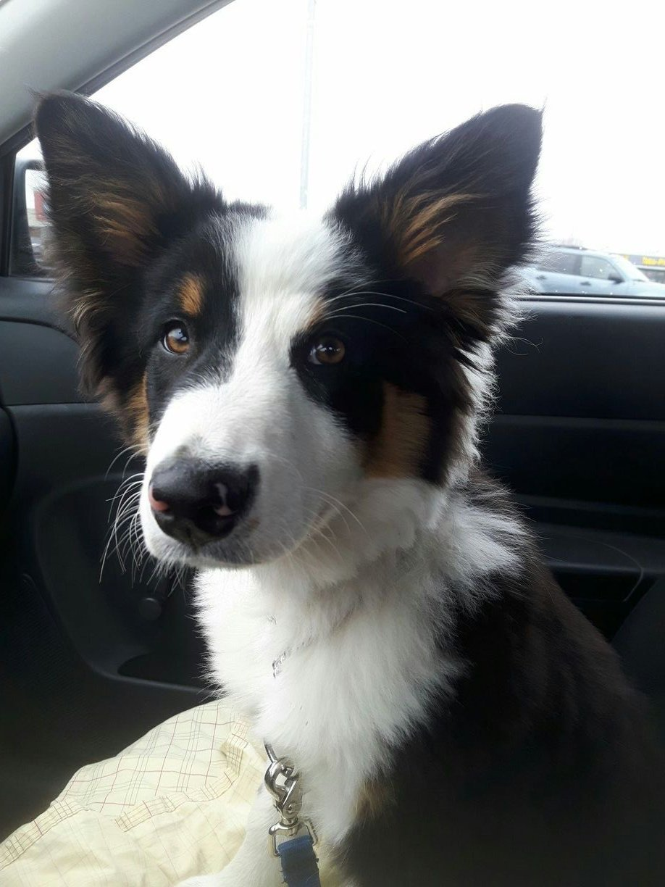
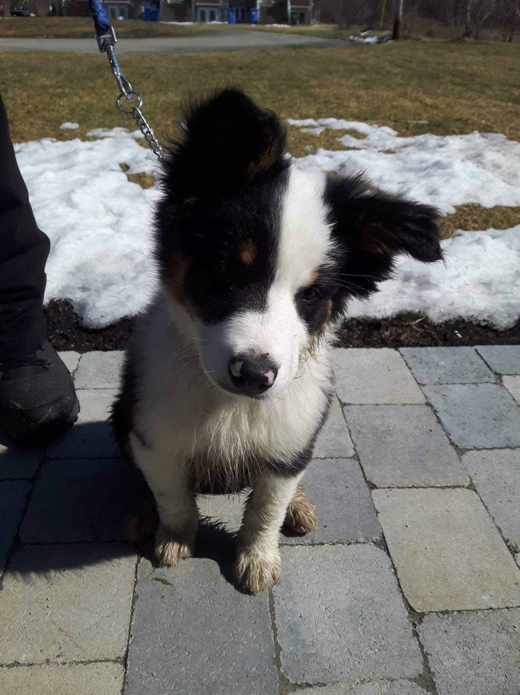

DRESSAGE CANIN
RACTLIFFE
DOG TRAINING
Ractliffe Dog Training offers in home dog training, behavioural modification and basic obedience instruction by using a balanced method. We customize our training to your specific needs and goals all based on the character, temperament and personality of your dog. // Dressage canin Ractliffe offre de la formation canine à la maison, de la modification de comportement et de la formation d'obéissance en utilisant des méthodes de formation équilibrées. Nous adaptons notre formation à votre situation et à vos objectifs spécifiques, selon le caractère, le tempérament et la personnalité de votre chien.
We work towards building a harmonious relationship between you and your dog! // Nous travaillons à la construction d'une relation harmonieuse entre votre chien et vous!
Services are offered in Montreal and surrounding areas. // Nos services sont offerts à Montréal et dans ses environs.
Do you have problems with: // Avez-vous de la difficulté avec :
Ractliffe Dog Training is here to help! // Dressage canin Ractliffe est ici pour vous aider!
Sheldon Ractliffe is from Saint-Lazare, a small town just outside of Montreal. He is bilingual, speaking French and English fluently. He has always had a love for dogs. // Sheldon Ractliffe est natif de Saint-Lazare, ville située tout près de Montréal. Il parle français et anglais avec aisance et il a toujours eu un intérêt pour les chiens.
As a child he did not have the chance to have one but was always intrigued by them. At a certain point in his life, he realized that he didn’t enjoy the kind of work he was doing. He wanted to find something gratifying and fulfilling. He finally made the decision to pursue his dream of becoming a dog trainer. He loves working with them and learning about canine behaviour. // Comme enfant (quand il était?, il n'a jamais eu la permission d'avoir un chien, mais il a toujours été particulièrement intrigué par ces derniers. À un certain moment de sa vie, il se rendit compte qu'il n'aimait pas le genre de travail qu'il faisait, passant d'un emploi à l'autre, ce rendant compte qu'il voulait trouver. Lors d’un changement de carrière, il a pris la décision de s’orienter vers un emploi plus gratifiant et valorisant, c’est ce qui l’a mené à suivre son rêve de devenir un maitre chien. Il aime travailler avec eux et apprendre sans cesse sur le comportement canin.
He has never been shy of challenges, a hard worker with good ethics and a go getter attitude. A recent graduate from the Montreal Dog Trainer's Network, Sheldon has been able to help many with the behavioural issues that their pets were exhibiting. He has been issued a certificate as a professional dog trainer from MDTN. He was taught by Harry Kalajian, President of MDTN as well as owner and operator of the Canadian Dog Trainer’s Association. // Fonceur et persévérant avec une éthique de travail impeccable, il est diplômé du cours de comportementaliste canin. Ce cours offert dans le cadre du Réseau des Dresseurs Canins de Montréal est certifié par Harry Kalajian, maître chien formateur, ainsi que président de RDCM et de l'Association Canadienne des Entraîneurs Canins
We customize programs tailored to fit your needs and goals! // TO BE DETERMINED
We offer in home classes and semi-private. // TO BE DETERMINED
Obedience training establishes leadership in your dog in and out of the home environment giving you control for real world distractions! Obedience helps teach the owner and to communicate and results in a well behaved dog with a happy owner. The bond between the handler and the dog is essential for success. Ractliffe Dog Training will guide you and will give proper instruction on how to go about building this relationship. // La formation d'obéissance est indispensable à une relation harmonieuse entre votre chien et vous. Chez Dressage Canin Ractliffe nous vous enseignerons comment communiquer avec votre chien. La relation entre le maitre et le chien est essentielle pour le succès.
During obedience training, we teach these commands: // Lors de la formation d'obéissance nous enseignons généralement les commandements suivants:
All dogs can react differently to particular situations, behaviour modification training is a systematic approach to changing how canines react by working to reinforce wanted and unwanted behaviours. We emphasize good behavior while discouraging the bad. Whether it’s barking at unfamiliar noises, door darting, lunging at the sight of other dogs, destructive habits, elimination inside the house, chasing after cars or even feeling anxiety to certain situations, Ractliffe Dog Training is here to help! // Tous les chiens peuvent réagir différemment à des situations particulières (ou stimuli). La formation de modification du comportement est une approche systématique pour changer la façon dont les chiens réagissent à certaines situations en travaillant pour augmenter les comportements voulus et diminuer les comportements indésirables. Nous renforçons les bons comportements tout en décourageant les mauvais tel qu’aboyer à des bruits inconnus, sortir de la porte en courant, se précipiter à la vue des autres chiens, faire ses besoins à l'intérieur de la maison, courir après les voitures ou même travailler les sentiments d'anxiété face à certaines situations. Dressage Canin Ractliffe peut vous aider!
Between the age of 3 to 12 weeks puppies are much more open to exploring and acceptant to new experiences. After that age they can become more cautious of anything they have not had the chance to encounter yet. Well socialized pups can mature into safer, relaxed and enjoyable dogs. // Entre l’âge de 2 à 12 semaines les chiots sont beaucoup aptes à être ouvert et acceptant aux nouvelles expériences. Après cet âge ils peuvent devenirs plus précautionneux des choses dont ils n’ont pas eu la chance de rencontrer. Un chiot bien socialisé peut devenir un chien hors de danger, relaxe et agréable.
During the puppy program we will cover: // Durant le programme pour chiot nous allons couvrir:
Here is a gallery of Sheldon at work! // Voici une gallerie de Sheldon au travail!
  You are free to call us at anytime! // Vous pouvez nous contacter à toutes heures!
TELEPHONE
514-730-5951
ractliffedogtraining@gmail.com